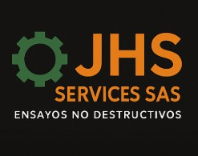
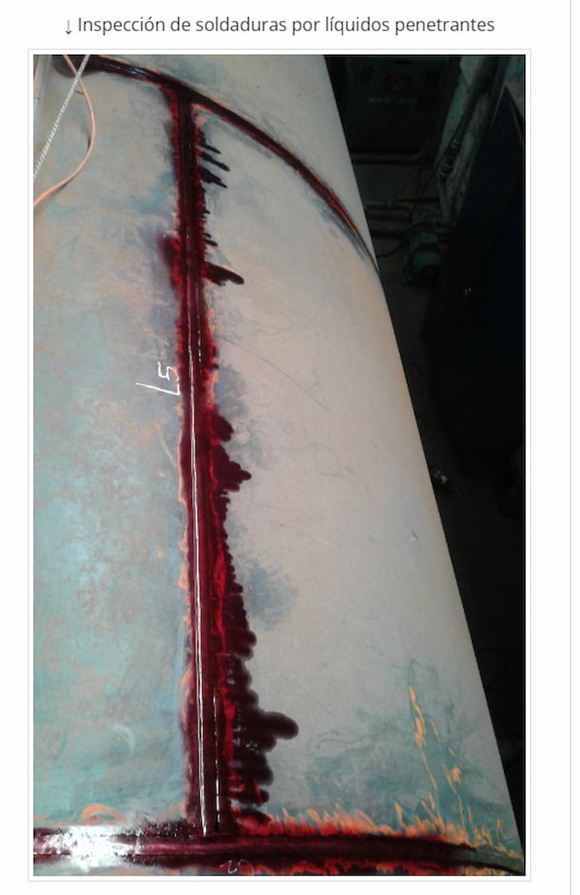

Ensayo e Inspección por Líquidos Penetrantes (PT)
Especialistas en Ensayos No Destructivos (END) en Bogotá. Detectamos discontinuidades superficiales en soldaduras y componentes mecánicos con alta precisión.
📲 Cotizar Inspección AhoraResultados de Ensayos Reales



Fundamentos Técnicos del Ensayo
La inspección por líquidos penetrantes es un método de ensayo no destructivo (END) diseñado para detectar discontinuidades macroscópicas y microscópicas abiertas a la superficie en materiales no porosos. El proceso se basa en el principio físico de la capilaridad, donde un líquido con baja tensión superficial penetra en las aperturas tras un tiempo de residencia determinado.
Ventajas y Desventajas del Método
| Ventajas (Pros) | Desventajas (Contras) |
|---|---|
| Alta sensibilidad para grietas superficiales muy finas. | Solo detecta fallas abiertas a la superficie (no internas). |
| Aplicable a gran variedad de materiales no porosos. | Requiere una limpieza previa extremadamente rigurosa. |
| Bajo costo comparado con otros métodos END. | No es aplicable en materiales porosos o rugosos. |
¿Necesita inspección volumétrica?
Si requiere detectar fallas internas o medir espesores, nuestro servicio de Ultrasonido es la solución ideal.
Ver Inspección por Ultrasonido
Si requiere detectar fallas internas o medir espesores, nuestro servicio de Ultrasonido es la solución ideal.
Ver Inspección por Ultrasonido
Normas y Procedimientos
- ASME Sección V: Artículo 6 (Líquidos Penetrantes).
- ASTM E165: Procedimiento estándar para examen PT.
- AWS D1.1: Criterios de aceptación en estructuras de acero.